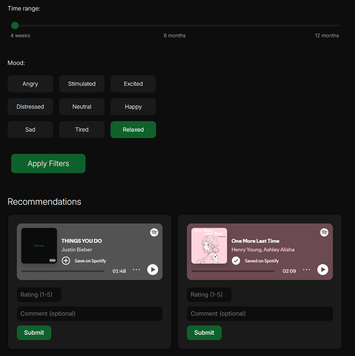
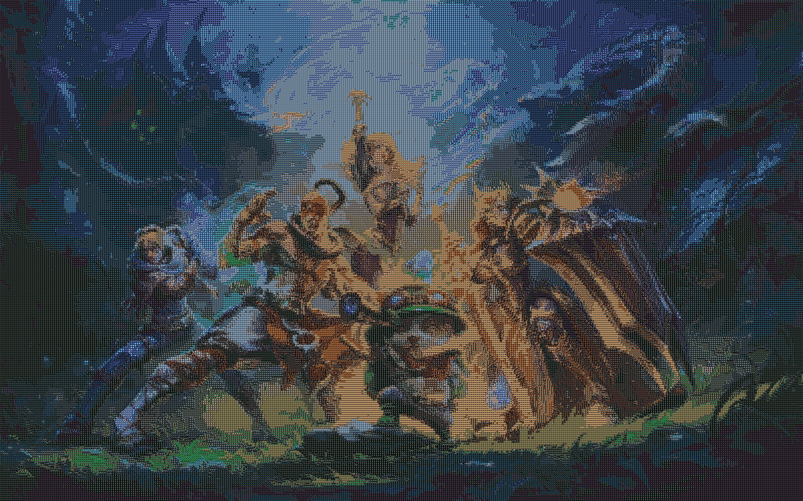

Mood-based Music Recommendation System
Song recommender that uses Spotify's API alongside content-based filtering based on audio features.

Responsive Image Gallery
Image gallery created with HTML and CSS that adapts to varying screen resolutions. Includes a dark/light mode toggle switch.

Image Mosaic Generator
This image creator takes a dataset of images, sorting them into a k-d tree by color properties, as well as a background image. It maps the background image's pixels to the images in the large dataset.